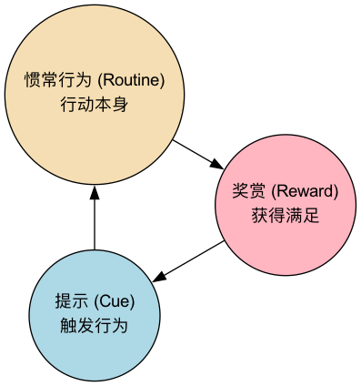

习惯回路¶
我们生活中的大部分行为，据研究估计有超过40%，都不是源于我们有意识的决策，而是由习惯所驱动的。从每天早上起床后先刷牙，到开车时自动地系上安全带，再到感到压力时下意识地点燃一根香烟，这些行为都在我们的大脑中，以一种近乎自动化的模式运行着。习惯回路（The Habit Loop），是一个由麻省理工学院的科学家提出、并由作家查尔斯·都希格（Charles Duhigg）在其著作《习惯的力量》中普及开来的一个强大的解释习惯如何形成和运作的神经学模型。
该模型的核心思想在于，任何一个习惯，无论其是好是坏，都由三个相互关联、循环往复的部分所构成。理解这个回路的运作机制，是诊断、戒除一个坏习惯，或设计、培养一个好习惯的根本前提。它为我们提供了一张“习惯的X光片”，让我们能够清晰地看到那些在潜意识层面驱动我们日常行为的底层代码。
习惯回路的三个构成部分¶
一个完整的习惯回路，由以下三个逻辑步骤组成，它们在大脑中形成了一条高效的“自动化捷径”。


-
暗示（Cue）
- 功能：这是启动整个习惯回路的“触发器”。当大脑接收到这个特定的暗示信号时，它就会自动地、不假思索地开始执行与之关联的惯常行为。
- 常见的暗示类型：
- 时间：例如，下午3点（暗示：该去喝杯咖啡提神了）。
- 地点：例如，回到家，看到沙发（暗示：该躺下看电视了）。
- 情绪：例如，感到焦虑或无聊（暗示：该刷刷社交媒体了）。
- 特定的人：例如，看到某个朋友（暗示：该一起去抽根烟了）。
- 前一个动作：例如，吃完晚饭（暗示：该来点甜点了）。
-
惯常行为（Routine）
- 功能：这是被暗示所触发的、我们实际执行的那个习惯性行为。它可以是极其复杂的，也可以是极其简单的。
- 例子：拿起手机，打开抖音，开始无休止地滑动；从冰箱里拿出一块蛋糕；或者，穿上跑鞋，出门跑步。
-
奖赏（Reward）
- 功能：这是让整个回路得以被固化和加强的关键。奖赏所带来的愉悦感，会向我们的大脑发送一个强烈的信号：“嘿，刚才那个‘暗示-行为’的组合感觉不错，下次再遇到同样的暗示，记得要重复这个行为哦！”
- 例子：刷抖音带来的新奇感和信息刺激；吃蛋糕带来的糖分和脂肪的愉悦感；跑步后内啡肽分泌带来的身心舒畅感。
如何应用习惯回路来改变习惯¶
习惯回路模型最强大的地方，在于它为我们提供了一个清晰的、可操作的改变习惯的框架。这个框架的核心原则是：你无法真正地“消除”一个坏习惯，但你可以“替换”它。即，保留旧的“暗示”和“奖赏”，但用一个新的、更健康的“惯常行为”，来替代那个旧的、有害的惯常行为。
-
第一步：识别你的习惯回路
- 选择一个你想要改变的坏习惯（例如，下午一到3点就想吃零食）。
- 花几天时间，有意识地观察并记录下这个习惯的完整回路。
- 识别惯常行为：这通常是最容易的。行为是“吃零食”。
- 识别暗示：当想吃零食的冲动出现时，立刻问自己：“现在是什么时间？我在哪里？我感觉如何？我周围有谁？我刚刚在做什么？”通过记录，你可能会发现，暗示是“下午3点左右，感到工作有点无聊和疲惫”。
- 识别奖赏：问自己，“吃了零食后，我真正得到的是什么？”是零食本身的味道吗？还是那种短暂的、从工作中抽离出来的“休息感”？或者是与同事聊天的“社交感”？识别出真正的“渴望（Craving）”，是找到有效替代方案的关键。
-
第二步：设计一个新的“惯常行为”
- 你需要设计一个新的、更积极的惯常行为，但它必须能为你提供与旧行为相同的“奖赏”。
- 如果你发现吃零食背后真正的奖赏是“从工作中短暂抽离”，那么新的惯常行为可以是：“站起来，去窗边伸个懒腰，做几个深呼吸”，或者“找一位同事，聊5分钟与工作无关的天”。
-
第三步：制定一个清晰的执行计划
- 为你的新习惯回路，制定一个清晰的、可执行的计划。格式为：“当【暗示】出现时，我将立刻执行【新的惯常行为】。”
- 例如：“当下一次，我在下午3点感到工作无聊时，我将立刻站起来，去茶水间为自己泡一杯茶。”
-
第四步：刻意练习与保持耐心
- 习惯的改变不会一蹴而就。在开始阶段，你需要有意识地、刻意地去执行你的新计划。当旧的冲动出现时，你需要有意识地“刹车”，并启动新的惯常行为。
- 每一次你成功地执行了新的回路，你都在加强它在大脑中的神经连接。坚持下去，新的行为最终会像旧的习惯一样，变得自动化。
应用案例¶
案例一：戒掉“睡前刷手机”的坏习惯
- 旧回路：
- 暗示：晚上11点，躺到床上。
- 惯常行为：拿起手机，开始无目的地刷社交媒体或短视频。
- 奖赏：获得新奇信息的刺激，暂时忘记一天的疲劳。
- 改变策略：
- 识别渴望：渴望的是一种睡前的“精神放松”。
- 新惯常行为：用一个能提供同样放松感的、更健康的行为来替代。例如，阅读一本轻松的小说，或者听一段舒缓的播客。
- 新计划：“当我晚上11点躺到床上时，我将立刻拿起枕边的Kindle开始阅读。”
案例二：培养“每日运动”的好习惯
- 目标：希望养成每天运动的习惯。
- 设计回路：
- 暗示：选择一个极其稳固的暗示，例如，“每天早上我一穿好衣服”。
- 惯常行为：穿上跑鞋，出门快走15分钟（从一个简单的、门槛低的行为开始）。
- 奖赏：运动后，允许自己喝一杯美味的咖啡，并记录下自己的运动成就，感受那种掌控感和活力。
案例三：Febreze（纺必适）空气清新剂的营销奇迹
- 背景：宝洁公司最初将Febreze定位为一款能“消除异味”的产品，但市场反应平平。因为对于那些生活在异味环境中的人（如养了很多宠物的人），他们早已对异味“嗅觉疲劳”，根本不存在“闻到异味”这个暗示。
- 重新设计回路：市场研究人员发现，有一群家庭主妇，她们在打扫完房间后，会喷洒Febreze作为一种“仪式”的结束。
- 暗示：刚刚完成了一件令人满意的清洁工作。
- 惯常行为：在干净的房间里，喷洒Febreze。
- 奖赏：闻到Febreze清新、芬芳的气味，这成为了一种对“清洁工作圆满完成”的、嗅觉上的奖赏。
- 结果：宝洁公司迅速调整了营销策略，将Febreze从一个“问题解决者”重新定位为一个“美好体验的创造者”，并添加了更怡人的香味。Febreze的销量因此一飞冲天，成为一个价值数十亿美元的超级品牌。这个案例，完美地展示了利用和设计习惯回路的巨大商业力量。
习惯回路模型的价值¶
- 提供诊断工具：为我们理解和诊断自己和他人的行为模式，提供了一个清晰、深刻的分析框架。
- 提供可操作的改变路径：清晰地指出了改变习惯的关键在于“替换惯常行为”，而非对抗暗示或放弃奖赏。
- 应用极其广泛：不仅可以用于个人成长，更可以被应用于产品设计、市场营销、组织管理等众多领域，通过设计有效的“习惯回路”，来引导和塑造用户的行为。
延伸与关联¶
- 微习惯（Tiny Habits）：BJ Fogg的微习惯模型，可以看作是对习惯回路理论的一个极其精妙和实践性的发展。其“锚点-微行为-庆祝”的配方，正是对“暗示-惯常行为-奖赏”回路最有效的应用之一，它通过将“惯常行为”变得极其微小，并设计一个即时的“庆祝”（内在奖赏），来高效地构建新的神经通路。
来源参考：查尔斯·都希格（Charles Duhigg）的全球畅销书《习惯的力量：我们为何如此生活，如何以及改变》（The Power of Habit: Why We Do What We Do in Life and Business）是普及和阐释“习惯回路”模型最核心、最权威的文献。该书综合了大量的神经科学研究和生动的商业与社会案例，深刻地揭示了习惯在我们生活中的巨大力量。